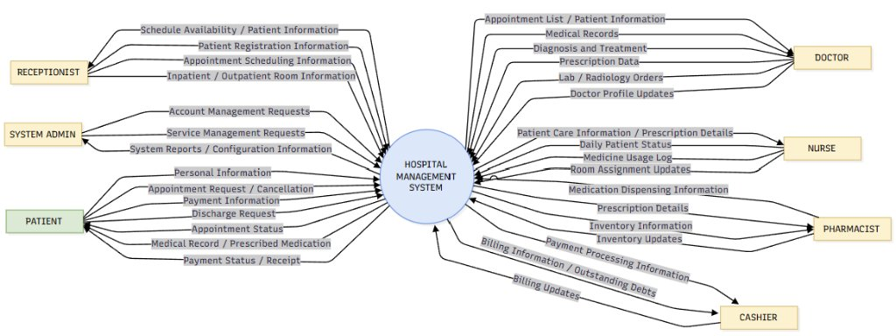
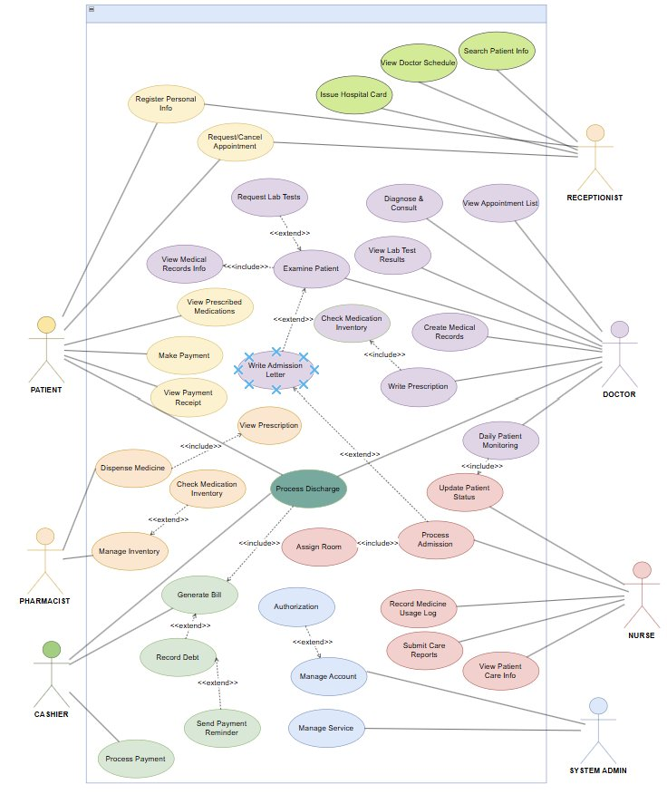
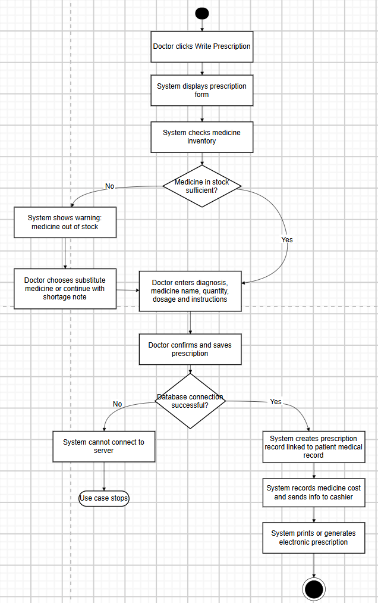
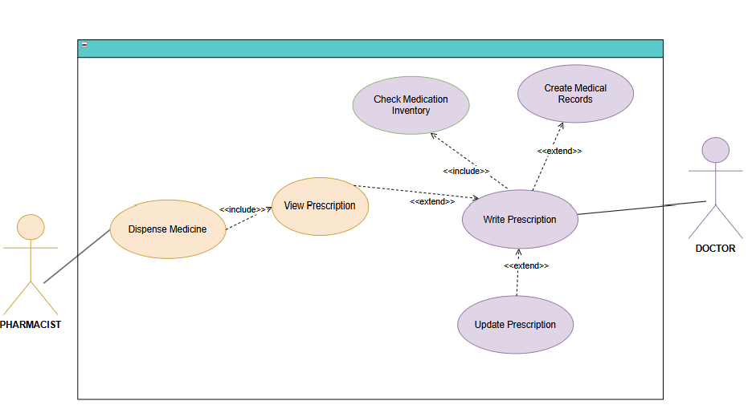
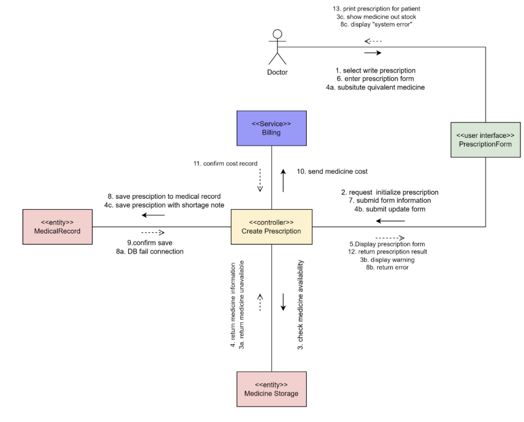
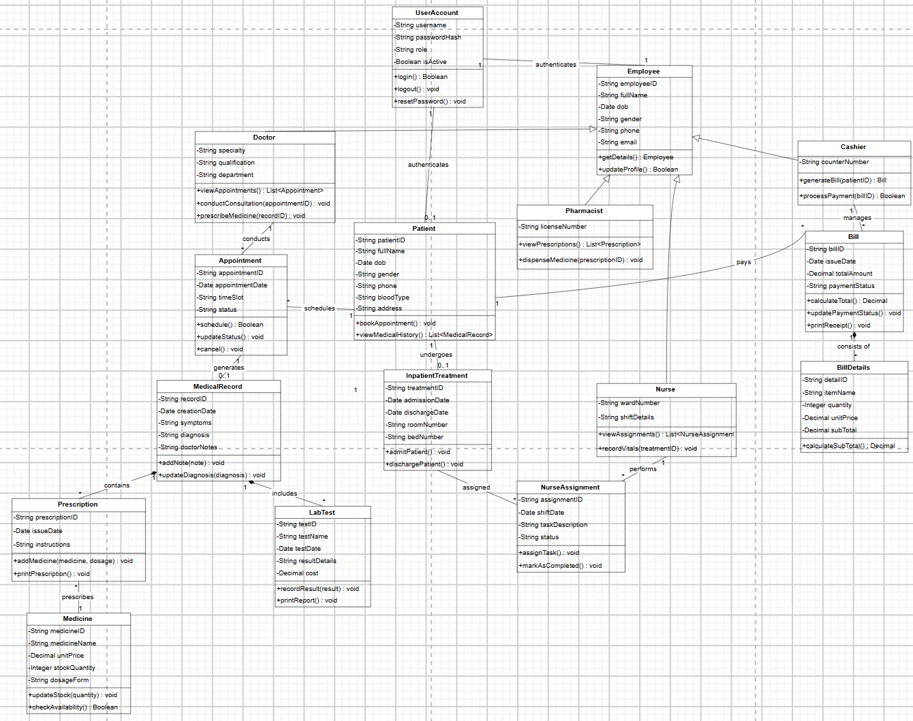
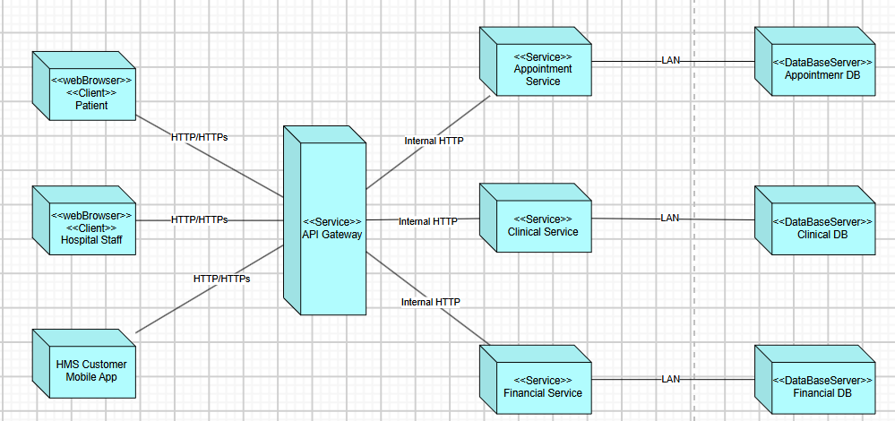
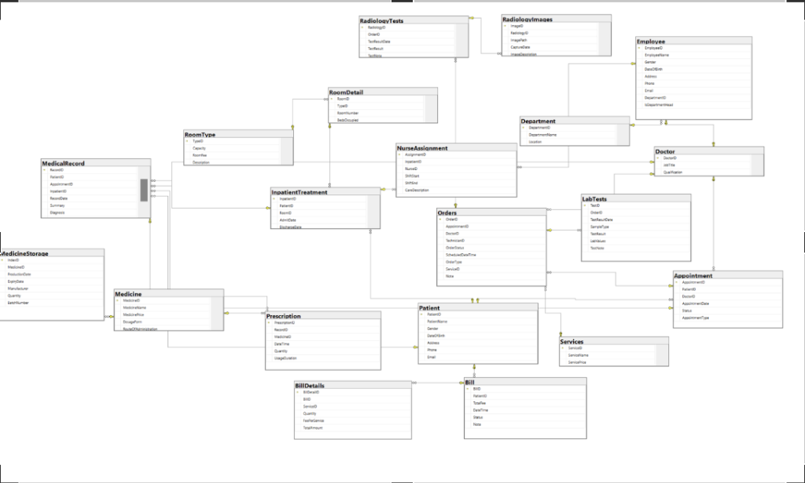
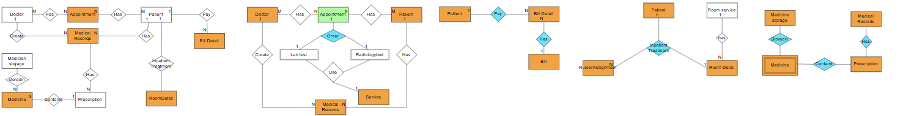

Hospital Management System (HMS) – SOA Architecture Hệ thống Quản lý Bệnh viện (HMS) – Kiến trúc SOA
Engineering end-to-end clinical workflows for inpatient/outpatient care, electronic health records (EMR), and inpatient billing; evolving from a monolithic 3-Tier Layered Architecture into a distributed Service-Oriented Architecture (SOA). Thiết kế chuỗi quy trình lâm sàng khép kín từ khám nội trú/ngoại trú, bệnh án đến xuất viện nội trú; nâng cấp từ kiến trúc đơn khối 3 tầng (3-Tier) sang Kiến trúc Hướng dịch vụ (SOA).
Project Overview Tổng quan Dự án
Purpose, architectural scope boundaries, and core clinical operational processes of the Hospital Management System. Mục tiêu hệ thống, ranh giới phạm vi kiến trúc và 5 luồng vận hành lâm sàng cốt lõi của Hệ thống Quản lý Bệnh viện.
🎯 System Purpose 🎯 Mục tiêu Hệ thống
The Hospital Management System (HMS) is designed to manage the data and operational procedures of a hospital. The system unifies employee and patient information, maintains the pharmaceutical warehouse, and standardizes medical examination and clinical treatment workflows. Hệ thống Quản lý Bệnh viện (HMS) được thiết kế để quản lý dữ liệu và các quy trình vận hành bệnh viện. Hệ thống lưu trữ thông tin nhân viên, hồ sơ bệnh nhân, quản lý kho dược và chuẩn hóa các chiến lược trong quy trình khám chữa bệnh.
📋 In-Scope Boundary 📋 Trong phạm vi (In-Scope)
- People (Actors):Tác nhân (Con người): Patients, Doctors, Nurses, Cashiers, Pharmacists, and Admins. Bệnh nhân, Bác sĩ, Điều dưỡng, Thu ngân, Dược sĩ, và Quản trị viên (Admin).
- Entities & Artifacts:Thực thể & Nghiệp vụ: Appointments, Medical Records, Outpatient Treatment, Inpatient Treatment, Billing, and Clinical Services. Lịch hẹn, Bệnh án điện tử, Điều trị ngoại trú, Lưu viện nội trú, Viện phí, và Dịch vụ y tế.
🚫 Outside Scope (Architectural Boundaries) 🚫 Ngoài phạm vi (Ranh giới Kiến trúc)
Explicit boundary constraints defining external system limits and architectural demarcations: Các ràng buộc ranh giới xác định giới hạn hệ thống và các điểm phân tách kiến trúc:
- External Entities:Thực thể bên ngoài: Insurance companies, external medicine suppliers, and third-party healthcare service providers. Công ty bảo hiểm, nhà cung cấp dược phẩm và các bên cung cấp dịch vụ thứ ba.
- Insurance Claims Processing:Xử lý yêu cầu bảo hiểm: Direct handling of insurance claims, policy validations, or communications with third-party insurers. Xử lý trực tiếp bồi thường bảo hiểm hay kết nối giao tiếp với các hãng bảo hiểm.
- General Hospital HR Management:Quản lý nhân sự chung bệnh viện: The system strictly revolves around handling medical examination and clinical treatment activities, excluding general hospital HR and payroll. Bài toán chỉ tập trung xoay quanh việc xử lý hoạt động khám chữa bệnh, không bao gồm chấm công hay quản trị nhân sự tổng thể.
🏥 5 Core Clinical Operational Workflows (Scope Specification) 🏥 5 Luồng Nghiệp vụ Lâm sàng Cốt lõi (Đặc tả Phạm vi)
Patient registers via form → triage scheduling with doctor → consultation & lab test orders → test results sent to clinic → triage routing into Outpatient (diagnosis, medication dosage prescription) or Inpatient (admission letter & room assignment). Bệnh nhân điền phiếu đăng ký khám → xếp lịch gặp bác sĩ → khám lâm sàng & chỉ định xét nghiệm → trả kết quả cận lâm sàng về phòng khám → phân loại: Ngoại trú (chẩn đoán, kê đơn thuốc và liều dùng) hoặc Nội trú (viết giấy nhập viện & xếp phòng lưu trú).
Doctor conducts consultation, issues prescription, and maintains longitudinal Medical Record (tests, diagnosis, administered drugs). Outpatients receive periodic follow-ups and pharmacy dispensing; inpatients receive daily doctor/nurse rounds with real-time condition logs. Bác sĩ hội chẩn, chẩn đoán, kê đơn và lập Hồ sơ bệnh án (xét nghiệm, chẩn đoán, thuốc sử dụng). Bệnh nhân ngoại trú tái khám định kỳ & nhận thuốc; bệnh nhân nội trú được bác sĩ và điều dưỡng thăm khám hàng ngày và ghi nhận diễn biến sức khỏe.
Automated compilation of medical examination and treatment service costs forwarded to Cashier. Upon fee settlement, patient presents paid receipt to doctor to obtain the official discharge summary and complete the checkout procedure. Hệ thống tự động tổng hợp bảng chi phí khám và dịch vụ điều trị gửi sang thu ngân. Sau khi đóng viện phí, bệnh nhân mang biên lai nộp cho bác sĩ để ký giấy xuất viện và hoàn tất thủ tục ra viện.
Automated cost aggregation across clinical services, medicines, and room fees. Persists cashier ID, settled total, and payment method. For unsettled balances, the system registers accounts receivable debt and triggers automated payment reminders. Tự động tổng hợp chi phí (dịch vụ khám, tiền thuốc, tiền giường phòng). Lưu thông tin thu ngân, số tiền, phương thức trả. Nếu chưa thanh toán đủ, hệ thống tự động ghi nhận công nợ và kích hoạt lịch theo dõi nhắc nợ.
Validates electronic prescription against real-time medical storage inventory. Upon stock verification, medicines are dispensed at the hospital pharmacy, simultaneously generating the official prescription report and itemized billing invoice. Kiểm tra số lượng thuốc trong kho sau khi nhận đơn. Khi kho còn đủ số lượng, bệnh nhân có thể nhận/mua thuốc tại nhà thuốc bệnh viện, đồng thời hệ thống tự động xuất báo cáo đơn thuốc và hóa đơn thanh toán.
My Contribution Đóng góp của tôi
Stakeholder alignment with faculty advisor, work breakdown structure (WBS), team orchestration, and core systems modeling. Thống nhất yêu cầu với Giảng viên hướng dẫn, phân rã công việc (WBS), điều phối đội ngũ và trực tiếp thiết kế các mô hình kiến trúc cốt lõi.
Team Leadership, Work Delegation & Technical Ownership Phân công Nhiệm vụ & Trách nhiệm Kỹ thuật
Stakeholder Elicitation & Advisor Alignment Thu thập yêu cầu & Thống nhất với Giảng viên
Acted as the sole liaison interfacing directly with the Faculty Advisor to capture, clarify, and translate complex healthcare business requirements and constraints into a formal scope baseline and 19 unambiguous Business Rules (BR1–BR19). Đóng vai trò đầu mối liên lạc duy nhất làm việc trực tiếp với Giảng viên hướng dẫn để tiếp nhận, chất vấn và làm rõ các yêu cầu nghiệp vụ y tế phức tạp; chuyển hóa phản hồi thành Scope Baseline chuẩn và 19 Quy tắc nghiệp vụ (BR1–BR19).
Work Breakdown (WBS) & Task Delegation Phân rã phạm vi (WBS) & Phân chia công việc
Decomposed the overall system into 5 distinct business modules (Appointment, Clinical Care, Pharmacy, Inpatient Stays, Billing). Assigned modeling responsibilities to 4 team members based on competency and set up unified UML/BCE modeling standards to ensure consistent outputs. Phân rã toàn bộ hệ thống thành 5 phân hệ nghiệp vụ độc lập (Lịch hẹn, Khám lâm sàng, Dược & Kho thuốc, Lưu viện, Viện phí). Phân công nhiệm vụ cho 4 thành viên theo thế mạnh từng người và thiết lập quy chuẩn mô hình hóa chung (UML/BCE pattern) để đảm bảo đồng bộ.
Progress Tracking & Cross-Model QA Theo dõi tiến độ & Kiểm soát chất lượng đồng bộ
Managed weekly sprint reviews, tracked delivery milestones, and resolved modeling blockers. Spearheaded cross-model peer reviews to guarantee strict alignment across Use Cases → Activity flows → BCE Sequence Diagrams → Domain Classes → Relational Schemas. Quản lý các buổi review tiến độ hàng tuần, theo dõi các mốc bàn giao và tháo gỡ vướng mắc cho thành viên. Trực tiếp chủ trì rà soát chéo (Peer Review) để đảm bảo tính nhất quán tuyệt đối giữa Use Cases → Activity flows → BCE Sequence Diagrams → Domain Classes → Relational Schemas.
Core Architecture & Technical Modeling Trực tiếp thiết kế Kiến trúc & Mô hình hóa cốt lõi
Personally authored the macro System Context Diagram, Overall & Detailed Use Cases, Physical Database Design UML, and spearheaded the architectural transition from a monolithic 3-tier structure to a distributed SOA. Trực tiếp đảm nhiệm thiết kế các sơ đồ quan trọng nhất: Context diagram, Use Cases Tổng thể và Chi tiết, thiết kế Cơ sở dữ liệu vật lý, và định hình giải pháp chuyển dịch từ kiến trúc 3 tầng sang mô hình hướng dịch vụ (SOA).
Case Study Evidence & Architectural Models Mô hình kiến trúc & Hiện vật Case Study
Visual architectural specifications demonstrating systems-level BA modeling. Trích xuất các đặc tả kiến trúc trực quan thể hiện năng lực phân tích nghiệp vụ & kiến trúc hệ thống.
1. System Context & Operational Scope Modeling 1. Context diagram & Mô hình hóa Phạm vi Vận hành
Defining the macro system boundary across 7 external stakeholder roles, tracing clinical data flows, and modeling branching decision logic within consultations. Xác định ranh giới hệ thống qua 7 tác nhân bên ngoài, theo dõi luồng dữ liệu lâm sàng và mô hình hóa logic rẽ nhánh trong quy trình khám bệnh.

🔍 Click to enlarge🔍 Click phóng to
🔍 Click to enlarge🔍 Click phóng to
🔍 Click to enlarge🔍 Click phóng tosufficient?), handling out-of-stock medicine substitution, database transaction commits,
and automatic dispatch of invoice details to Billing.
Mô hình hóa các nhánh rẽ trong khám lâm sàng: kiểm tra tồn kho thuốc
(còn đủ?), xử lý đổi thuốc thay thế khi hết hàng, commit giao dịch dữ liệu và tự động
điều
phối chi tiết hóa đơn sang bộ phận Viện phí.
🔍 Detailed Use Case Decomposition by Business Domain 🔍 Phân rã Use Case Chi tiết theo Từng Phân hệ Nghiệp vụ
Interactive ExplorerTrình xem Tương tácDecomposing the overall high-level use case model into granular operational interactions, highlighting actor collaborations, «include», and «extend» relationships for key hospital subsystems: Bóc tách mô hình Use Case tổng quan thành các tương tác tác nhân chi tiết, làm rõ các mối quan hệ «include» và «extend» cho các phân hệ bệnh viện trọng tâm:

🔍 Click to enlarge🔍 Click phóng toClinical prescription issuance and fulfillment: The Doctor initiates 'Write Prescription', which mandates real-time inventory validation («include» 'Check Medication Inventory') and extends into 'Create Medical Records'. The Pharmacist executes 'Dispense Medicine' («include» 'View Prescription'), with bi-directional «extend» flows for viewing and updating active prescription details.
2. Detailed Interaction & Domain Data Architecture (BCE Collaboration & Domain Model) 2. Tương tác Chi tiết & Kiến trúc Dữ liệu Domain (Mô hình BCE & Domain Model)
Structuring robust Boundary-Controller-Entity (BCE) object collaboration and formulating an enterprise domain model with 16 core healthcare entities. Cấu trúc hóa sự cộng tác đối tượng Boundary-Controller-Entity (BCE) và xây dựng mô hình Domain Class chuẩn hóa với 16 thực thể y tế cốt lõi.

🔍 Click to enlarge🔍 Click phóng toPrescriptionForm (Boundary), processed by Create Prescription (Controller),
querying Medicine Storage and persisting to Prescription, linking
MedicalRecord, and invoking Billing.
Mô hình hóa cộng tác đối tượng theo mẫu thiết kế BCE: Bác sĩ tương tác với
PrescriptionForm (Boundary), được điều phối bởi Create Prescription
(Controller), truy vấn Medicine Storage và lưu vào Prescription, liên kết
MedicalRecord và gọi sang Billing.

🔍 Click to enlarge🔍 Click phóng toEmployee
inheritance hierarchy (Doctor, Nurse, Pharmacist,
Cashier), relational associations connecting Patient,
Appointment, MedicalRecord, Prescription, and ledger entities
(Bill, BillDetails).
Mô hình domain toàn diện gồm 16 thực thể: phân cấp kế thừa từ
Employee
(Doctor, Nurse, Pharmacist, Cashier), các liên kết
quan hệ kết nối giữa Patient, Appointment, MedicalRecord,
Prescription và các bảng sổ cái (Bill, BillDetails).
3. Architectural Evolution: 3-Tier to SOA & Subsystem Data Modeling 3. Tiến hóa Kiến trúc: 3-Tier sang SOA & Mô hình hóa Dữ liệu Phân hệ
Redesigning the monolithic architecture into a distributed Service-Oriented Architecture (SOA) across Web and Mobile clients, underpinned by modular domain decomposition and ACID-compliant relational schemas. Tái cấu trúc kiến trúc đơn khối sang mô hình Hướng dịch vụ (SOA) phục vụ đa nền tảng Web & Mobile, với nền tảng phân rã domain độc lập và schema quan hệ chuẩn ACID.

🔍 Click to enlarge🔍 Click phóng to
🔍 Click to enlarge🔍 Click phóng to🧩 Modular ERD Decomposition by Subsystem 🧩 Phân rã Mô hình ERD theo Từng Phân hệ Nghiệp vụ
Interactive ExplorerTrình xem Tương tácTo prevent monolithic data lock-in and enable autonomous service boundaries (Section VI), the enterprise ERD was systematically decomposed into 5 dedicated functional subsystems: Nhằm tránh phụ thuộc dữ liệu đơn khối và thiết lập ranh giới dịch vụ tự chủ (Mục VI), mô hình ERD toàn diện được phân rã thành 5 phân hệ chức năng chuyên biệt:

🔍 Click to enlarge🔍 Click phóng toComplete visual continuum showing the 5 decomposed ERD subsystems side by side: Appointment Scheduling, Medical Records, Billing, Hospital Stays, and Medicine Storage. Separating domain entities into cohesive modules established clear bounded contexts, laying the conceptual groundwork for the 3 autonomous microservices (Appointment DB, Clinical DB, Financial DB) in Section VI.
📖 Data Dictionary & Entity Relationship Narrative 📖 Từ điển Dữ liệu & Đặc tả Quan hệ Thực thể
20 Entities Filterable 20 Thực thể có Thể LọcDetailed semantic specification of relational constraints, cardinalities, and operational dependencies across all 20 hospital domain entities as authored in the system requirements specification: Đặc tả ngữ nghĩa chi tiết về các ràng buộc quan hệ, lực lượng và tính phụ thuộc vận hành trên toàn bộ 20 thực thể nghiệp vụ bệnh viện: